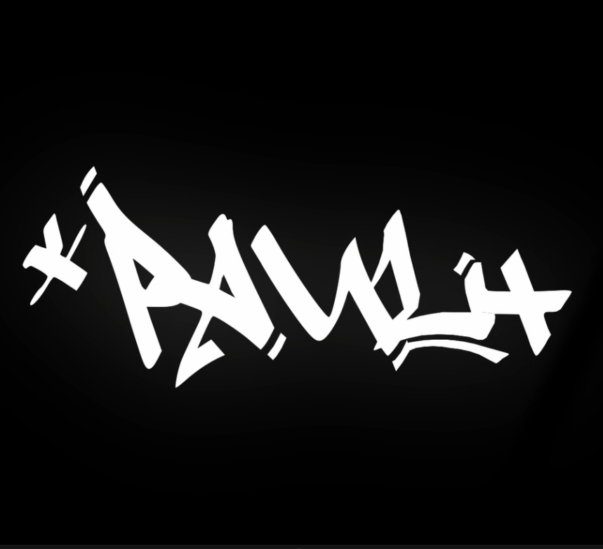
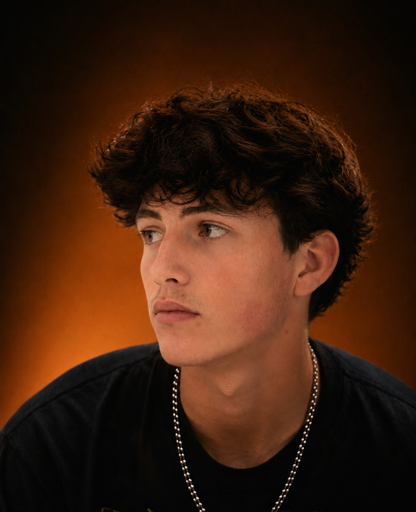
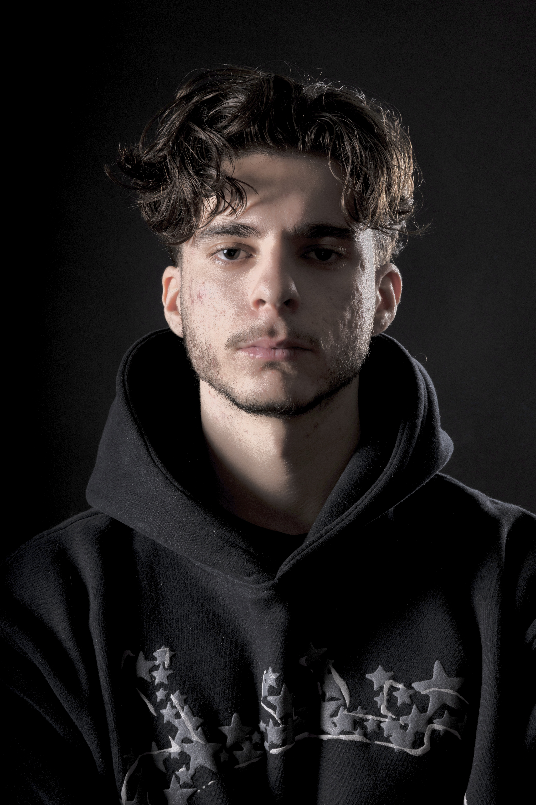

Motion design · 2026
Fidélisation
Animation, rythme et design graphique

PF Paul FourtonJe suis en 2e année de BUT MMI, parcours création à Tarbes. Entre montage vidéo, design visuel et direction artistique, je développe des projets pensés pour capter l’attention et raconter clairement une idée.

Animation, rythme et design graphique
Narration, montage et atmosphère
Cadence sociale et impact visuel
J’aime les images qui ont une intention, les montages qui trouvent le bon tempo et les identités que l’on reconnaît en une seconde.

Après AvantCréatif polyvalent, je construis des univers cohérents de la première idée au rendu final. Mon approche mélange sens du détail, culture visuelle et efficacité : beau, oui — mais toujours au service du message.
J’accompagne artistes, marques et projets indépendants avec une méthode souple, collaborative et sans jargon inutile.
Parlons de votre projet ↗projets imaginés
disciplines créatives
d’implication
Une vision globale, de l’idée à la livraison.
Films de marque, contenus sociaux, clips, interviews et formats courts.
↗Typographies animées, transitions, habillages et systèmes graphiques en mouvement.
↗Identités, affiches, miniatures, campagnes et contenus qui restent en tête.
↗Concept, moodboard, narration et cohérence globale de vos prises de parole.
↗